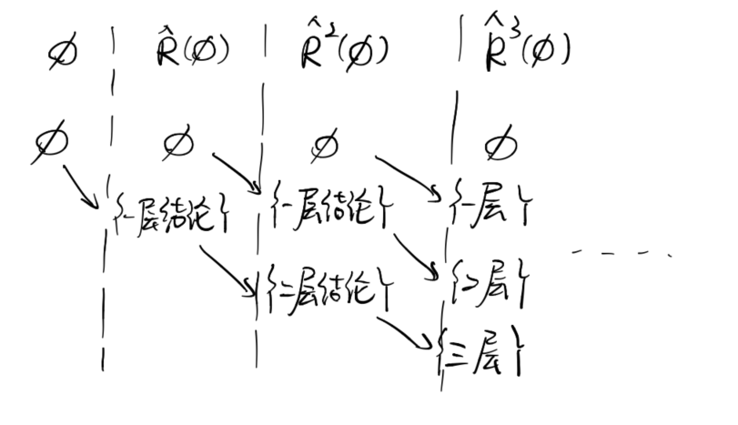

我最喜欢吃红豆了。
单独开一篇讨论不动点在证明循环时候的作用。可恶
我选择用操作语义去证明它。回顾 while 的操作语义w=whilebdoc：
⟨w,σ⟩→σ⟨b,σ⟩→false⟨w,σ⟩→σ′⟨b,σ⟩→true⟨c,σ⟩→σ′′⟨w,σ′′⟩→σ′
下面，我将结合C:=0;whileC<1doC:=C+1; 这个例子来说明证明方法。
（先用顺序赋值整个⟨C:=0,σ0⟩→σ1
-
构造规则实例集合R。在例子中，有：
R={(0):⟨C,σ1⟩→0∅,(1):⟨C<1,σ1⟩→true⟨C,σ1⟩→0,(2):⟨C:=C+1,σ1⟩→σ1[1/C]⟨C,σ1⟩→0,(3):⟨C,σ1[1/C]⟩→1∅,(4):⟨C<1,σ1[1/C]⟩→false⟨C,σ1[1/C]⟩→1,(5):⟨w,σ1[1/C]⟩→σ1[1/C]⟨C<1,σ1[1/C]⟩→false,(6):⟨w,σ1[1/C]⟩→σ1[1/C]⟨C<1,σ1⟩→true⟨C:=C+1,σ1⟩→σ1[1/C]⟨w,σ1[1/C]⟩→σ1[1/C],}
这其实是我们解这个循环需要的所有的规则实例了。
-
构造算子R^：
R^(B)={y∣∃X⊆B,yX∈R}
注意，关键是有这样一条链：
∅⊆R^(∅)⊆R^2(∅)⊆...⊆R^n(∅)⊆...
这是为什么？先看下例子：
R^(∅)={⟨C,σ1⟩→0,⟨C,σ1[1/C]⟩→1}，由规则实例(0),(3)R^2(∅)={⟨C,σ1⟩→0,⟨C,σ1[1/C]⟩→1,⟨C<1,σ1⟩→true,⟨C:=C+1,σ1⟩→σ1[1/C],⟨C<1,σ1[1/C]⟩→false}由规则实例(0),(3),(1),(2),(4)
实际上，我们可以对得到的结论进行分层。一层为公理（由空集推出），二层为由一层结论和公理推出的，三层为前两次和公理推出的…
于是很显然，R^(∅) 就包含了公理，而R^2(∅) 就包含了公理和一层结论（因为当然∅⊆R^(∅)）。而R^3(∅) 就包含了公理，一层结论和二层结论。画个图的话，就如下：

于是我们发现，随着算子R^ 的迭代，有：
∅⊆R^(∅)⊆R^2(∅)⊆...⊆R^n(∅)⊆...
-
于是我们就可以定义fix=⋃n∈ωR^n(∅) 了。
- 首先，fix 是对R 封闭的。很显然，∀X⊆fix,yX∈R，有y∈fix。
- 其次，因为fix 是对R 封闭的，所以R^(fix)⊆fix。因为∀y∈R^(fix)，由R^ 算子的定义，都有∃X⊆fix,yX∈R。而 fix 是对 R 封闭的，所以有y∈fix。
- 再者，有fix⊆R^(fix)。因为∀y∈fix，∃n,y∈R^n(∅)。那么根据算子定义就有∃X,X⊆R^n−1(∅)⊆fix。根据算子定义，就有y∈R^(fix)。
- 于是综上，就有了R^(fix)=fix。而fix 集合就是我们要的循环的操作语义，就是一层层循环计算的过程。
为什么要整这么麻烦？为什么不能直接很显然地：
R^(fix)=n=2,3,4,...⋃R^n(∅)=n=2,3,4,...⋃R^n(∅)∪∅=n∈ω⋃R^n(∅)=fix
呢？其实这牵扯到一个域收敛的问题。当这个循环是有限次截至的话，因为规则实例一定是有限个，那么这么写肯定没问题。但对一般的循环我们不清楚执行情况的话，证明将变得不严谨。其实还是用到了一个定理：